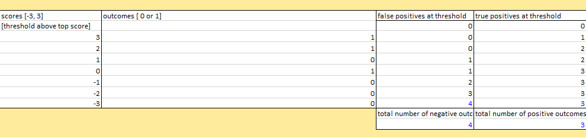

Objectives
More Excel - binary classification
Notes developed using material produced by Daniel Egger from Duke University. Copyright Daniel Egger/ Attribution 4.0 International (CC BY 4.0)
Binary Classification
Binary classification is the process of determining the classification of something with either a positive or a negative.
This methodology dates from the 1940's when decisions had to be made based on radar signals whether to send up fighter pilots or not. The cost of a false positive was the burning of aviation fuel, and exhausting the pilots. The cost of false negative could have catastrophic consequences.
The methodology known as receiver operating characteristic curve or ROC curve was developed for this purpose. The curve itself allowed decision makers to choose when to make a positive classification based on their best estimate for the cost of making a false positive and a false negative. Maximising the area under the ROC curve is a good measure of the power of a binary classification model to discriminate signal from noise that is still used.
In the following example we have two conditions, the radar signal either indicates Bombers or Seagulls. We also have two classifications called Positive (send up the fighters) and Negative (do nothing).
This produces a 2*2 grid with four possible classifications and conditions. It is traditional to locate the actual condition to the left of the grid, thus showing (+) for bombers and (-) for seagulls below. The same for the classification at the top, a positive one to the left, negative to the right. This allows us to label the four squares on the grid as True Positive, False Positive, False Negative, True Negative.
This is called the confusion matrix:

In this example the ROC curve works in that each radar image is assigned a numerical score that corresponds to the actual area of the blur on the radar screen.

The actual condition wheather it is a bomber or a seagull is also tracked. After data is collected, pairs of scores and actual conditions are placed in ranked order from highest to lowest score.
Fighter command could determine that no image on the radar justified a positive classification, thus every classification would be negative. Alternatively they could decide that every image on the radar justified a positive classification, thus every classification would be positive.
In reality the threshold between positive and negative classifications is always set somewhere in between those two extremes, the threshold usually depends on the cost of false classifications.
A False positive "rate" is the total number of false positive classifications, divided by the total number of seagulls. A True positive "rate" is the total number of true positive classifications, divided by the total number of bombers.
The ROC curve is drawn by identifying for a given threshold, its false positive rate and its true positive rate then plot these points where the x and y axis meet. The x axis is the false positive rate and y axis is the true positive rate. Plot these coordinates for each threshold between the highest and the lowest scores. Summing the area beneath the curve gives the Area Under the Curve (AUC)

Confusion Matrix
When we have binary outcomes and a binary classification, we can be right in two different ways and we can be wrong in two different ways.
When we correctly classify an event as positive this is known as a True Positive. When we correctly classify an event as negative this is known as a True Negative.
How can we achieve a good result, while minimizing the errors? When we incorrectly classify an event as positive this is known as a False Positive. When we incorrectly classify an event as negative this is known as a False Negative (perhaps the biggest error).
So in our situation with our bombers and seagulls, we have 20 observations, of which 3 turned out to be bombers and 17 were seagulls. In terms of the numerical rating the 3 bombers are shown in red and the seagulls in black.
When the ratings are ranked the 3 bombers are not all at the top, they appear at 92, 83 and 75. If they were all at the top it would make the job of setting the threshold very easy but that's not the case.

We could decide to put our threshold at 80. We would have two true positives (83 and 93) and one false negative (75). Or we could put it at 70 and have three true positives and no false negatives. However how many false positives would we have? We want to avoid sending our planes up when actually it is just a seagull! If we stuck with a threshold of 70 we would have 7 false positives.
Using the confusion matrix we can populate the four boxes for the chosen threshold.
At a threshold of 80 we would have the following:
2 true positives 1 false negative 4 false positives 13 true negatives
At the threshold of 80 our matrix looks like this:

What would happen if our threshold was at 70?
Our binary classifications system involves something that generates ratings that can be turned into rankings to which we can apply a threshold. Everything below the threshold is negative and everything above the threshold is positive.
Optimal Threshold
The typical way that we characterize a particular threshold is by its false positive rate and its true positive rate.
A false positive rate is the number of false positives divided by the total number of negatives. The true positive rate is the opposite, the number of true positives divided by the total number of positives.
At a threshold of 80 we would have the following:
- 2 true positives
- 1 false negative
- 4 false positives
- 13 true negatives
In this we have a total of 17 negatives, 13 that were true and 4 that were false positives.
It has a false positive rate of 4 divided by 17.
In this case 2 true positives divided by the total positives which is 3. Therefore it has a true positive rate of 2/3rds.
And at our threshold of 70,

Has a false positive range of 7/17ths, but it has a true positive range of one (3/3).
Each ordered pair where x is equal to the false positive rate, y is equal to the true positive rate.
- x= FP rate
- y = TP rate
every threshold has it's corresponding point on the plot.
Each of these points can be plotted on an x y coordinate plane, and so every threshold has its corresponding point. So the threshold of 80 would have the point 4/17ths, so that's a little bit less than a quarter and two thirds, 4/17ths, 2/3rds and 7/17ths 1.
So, this is a representation of
The false positive rates and the true positive rates, at all possible thresholds.
It shows at each threshold the intersection between false positive and true positive rates.
And the shaded area is called the area under the curve.
Which in the case of our example is equal to .82 (more on this in our next lab).
Which is quite a reasonable, decent rate for a diagnostic or for any kind of tool that's trying to discriminate between two states.
How much it's actually going to cost us, our cost function, is dependent upon the cost for each mistake.
So generally, False negative mistakes are very expensive, Bombers get through and they destroy a lot of things.
Then False positive mistakes are also expensive, we sent up a bunch of planes and we used up fuel and we also had the risk that our planes were one place where bombers might be somewhere else.
We will see when we work with some quiz problems and with Excel spreadsheets that where you put your threshold is going to be determined by the relative size of these two costs.
So in a situation where bombers getting through is hugely expensive relative to the cost of sending up planes. Then you really, really want the smallest possible number of False Negatives here.
Thus we're willing to go for a lower threshold.
Calculating Positive and Negative Predictive Values
Now we will use another example of binary classification, this one is a typical distribution for a cancer diagnostic. It is a protein blood test that identifies a rare cancer. It has an incidence rate of 1% in the population we are studying. This means individuals getting the blood test have a 1% chance of having the cancer and 99% of not.
This test would be considered a good test because:
Its true positive rate is 95% (true positives divided by actual incidence of condition). and Its true negative rate is 80% (true negatives divided by the incidence of not having the condition).
If you come to the doctors office and get a positive test result you might be alarmed if you had been told the test has a true positive rate of 95%.
The true positive rate is the conditional probability of having a positive test where I do have cancer.
P(positive test/+ cancer)
The true negative rate is the conditional probability of having a negative test where I don't have cancer. P(negative test/- cancer)
That isn't really what we want to know.
What we want to know is:
- What is the conditional probability of having the condition having received a positive blood test?
Positive Predictive Value
P(+ cancer/ positive test)- What is the probability of us not having the condition when we receive a negative blood test?
Negative Predictive Value
P(- cancer/ negative test)The way we calculate these is to use the true positive value divided by the total number of positive classifications.
Positive predictive value
.0095/.2075 = 4.58%I have a 4.58% chance of having cancer.
Negative predictive value
.792/.7925 = 99.937%I have a 99.937% chance of not having cancer.
Area Under the Curve
The area under the Receiver Operating Characteristic or ROC curve, also called the AUC, is the most widely used performance metric for binary classification models.
Its two great strengths are, first, that AUC results do not change in the incidents of the actual condition, nor is AUC affected by changes in the relative cost of the two different types of binary classification errors, false positives and false negatives. Therefore when either future incidents or the cost of classification errors or both are unstable or cannot be known, the AUC is generally the best possible performance metric available.
The AUC metric ranges from a minimum of one-half (.5) to a maximum of one. An AUC of one-half indicates total uncertainty about classification. An AUC of one would be classification with zero errors, a theoretical ideal that no one expects you to meet. A normal good to very good area under the curve is typically in the .65 to .85 range.
A common technique in data analysis is to develop a binary classification model by varying certain parameters so as to maximise the AUC on a sample data set of data with known outcomes, often called a training set.
Download the following data set:
The ROC helps to measure the effectiveness of our model at each threshold. To make a ROC curve you start with a collection of events. In this spreadsheet, there are seven events numbered one through seven. In column B, rows 20 through 26. Each event is assigned a score (C20-C26). Each event also has a binary outcome shown in column D20-D26).
To generate an ROC curve, we need to know what the true outcomes are and then we need to know how effective our model is at each possible threshold for positive classification.
The way we do this is we rank all of the events by the score (this is already done for you in the spreadsheet).
Now you must perform the classification at each threshold.
At the first threshold which is a score above 3 there are no occurrences, and everything would be classified as negative.
At the next threshold which has a score of 3 or above, figure out how many false positives there would be and fill in cell E20.
Next figure out how many true positives there would be and fill in cell F20.
Work you way through each threshold calculating and filling in the appropriate cells for the false positives and true positives
Here you can see we counted at the threshold of 3 there would be no false positives, and 1 true positive. At the threshold of 2, there would be no false positives, and 2 true positives. At the threshold of -2, there would be 3 false positives, and 3 true positives.

False positive rate and True positive rates
Remember this is calculated as:
- The number of false positives at a threshold divided by the total number of negative outcomes.
- The number of true positives at a threshold divided by the total number of positive outcomes. ~~~ cell G19 should have the following formula:
=E19/$E$28
The same formula should apply for each row down to G26.
Then write the formula to calculate the true positive rate.
##Area under the curve
Now that you have calculated the false positive and true positive rates we have our x and y axis points for plotting.
Remember they are:x= FP rate y = TP rate
~~~
The figures you should have for these rates are as follows:
For the threshold where the score is greater than or equal to 1 there are three outcomes, two positive outcomes and a negative outcome. The negative outcome is incorrectly classified as positive, therefore there is one false positive, and the two actual positive outcomes are correctly classified, therefore there are two true positives.
The false positive rate is 1 divided by 4 = .25 The true positive rate is 2 divided by 3 = .67
This ordered pair .25, .67 is represented on our ROC curve. If we start at 0,0 and we plot the ordered pairs 0,.3 then 0, .67, then .25, .67 and so on until we get to 1,1 we have marked the points for four rectangles on chart 1. Notice that either the x or y axis change between two points, never both.
As you enter these values you will see the two charts will be represented below. This type of chart is a scatter chart. The data set used to construct the chart is G18:H26
Next we sum the area of these rectangles to get an idea of the overall strength of our classification model. So we take the width of each times its height so the first rectangle has a width of .25 and a height of .67. The second rectangle has a width of .75 (1-.25) and height of 1. These areas are equal to 0.917.
Each threshold has it's own confusion matrix in the spreadsheet. When you take a look at each confusion matrix we can see at event 0 everything is classified as negative. Once we go to event 1 where the threshold is greater than or equal to 3 then we have essentially moved the score of 3 (circled in blue) to be a positive classification (blue arrow). This is the case each time we move up a threshold, the score 2 (circled in red) moves to be a positive classification for threshold greater than or equal to 2. For each change in threshold one of the positive classification items will change. When we moved the score of 3 to be positive then the positive outcome increases to 1, when we move the score of 2 it increases to 2 and when we move the score of 1 then the false positive increases to 1 (all circled in black).
The Cancer Diagnosis spreadsheet works the same way as the bombers and seagulls scenario. It is designed to provide a realistic simulation of the cost-benefit assumptions that must be made to set the classification threshold for a medical diagnostic product. Download the spreadsheet and investigate the contents, below are details of what is contained in the file:
- The file has 10,0000 rows of data.
- The ranked scores in column A are the level of a certain protein as measured by the diagnostic test.
- The true condition for each protein level is given in column C [Cancer=1, No Cancer=0].
- A threshold for a positive classification can be set between any two protein levels.
- For each threshold in column A, the resulting number of false negative classification errors is given in column H, and the false positive classification errors in column F.
There are 100 correct cancer diagnosis out of the 10,000, resulting in 9900 correct no cancer diagnosis. If you look at row 19, protein value 18636.922. If the threshold is set to greater than this amount there would be 1 true positive diagnosis and 9 false positive diagnosis. This can also be read as saying at that threshold there would be for the sample, 9 false positives and 99 false negatives (only one true positive at that threshold out of the 100 total).
This spreadsheet is designed to allow you to observe how changing cost inputs impacts both:
- the overall costs of using a cancer diagnostic test at each threshold, and
- what threshold should be chosen as optimal thus minimizing costs.
Cell G3 contains the cost per False Negative (missing a cancer case) and cell H3 for the cost per False positive (a false alarm). Total costs as each threshold are given in column K.
The minimum total cost, and minimum cost per event (per diagnosed classification reported), are displayed in cells K4 , and L4,
The optimum threshold - the lowest protein level score that should be classified positive is displayed in cell M4. The formula finds the threshold with the lowest overall cost (in false positives and false negatives). In this case it is Row 2103 where at the default costs of €50,000 per false negative error and €500 per false positive error, the minimum cost per event is €119.90, and the optimal threshold for positive classification is 16551.930.
Answer the following questions:
Change the cost per FN to $15,000 and change the cost per FP to $1,500
- What is the new minimum cost per event/cost per test (rounded to the nearest dollar)?
- What is the lowest level of protein that should be classified "Positive" to achieve the minimum cost per test at the new cost per error given the above?
- Can a change in classification threshold change a diagnostic test's True Positive Rate? Use logic - no need to calculate any numbers.
- "Condition Incidence" is the portion of a population that has the condition being studied. Can a change in the threshold change the condition incidence? Use logic.
- Does the change in threshold change the test's Area under the ROC curve? Use logic.
AOC
Calculate the area under the curve for the soldier data
You will need to calculate the true positives and false positives for each threshold in the 12 instances of height data.
Then calculation the true positive rate (y) and false positive rate (x) at each threshold for the height.
Then plot the x and y pairs (false positive rate, true positive rate) on a scatter chart.
Identify each rectangle on the chart and calculate the area of each rectangle by multiplying height by weight to find out the AUC. Based on the result is this a good model?
This work is to be submitted to Moodle and is worth 10% of your continuous assessment marks. The work is to be done individually.
- AUC.xlsx
- Cancer-Diagnosis.xlsx
- Forecasting-Solider-Performance-single-ca2.xlsx